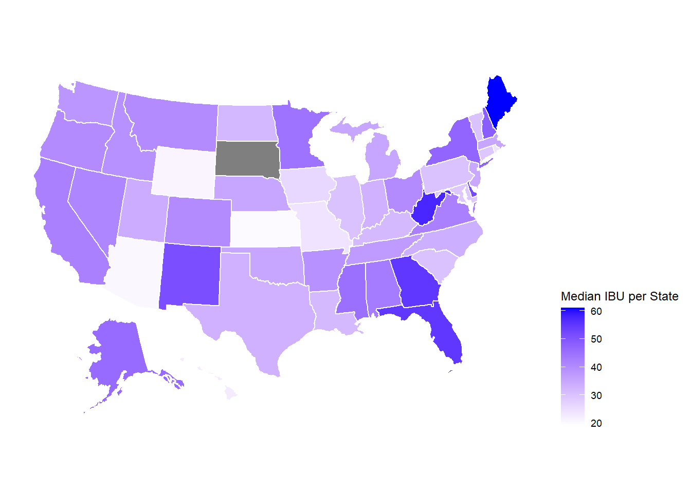

This is an R Markdown document. Markdown is a simple formatting syntax for authoring HTML, PDF, and MS Word documents. For more details on using R Markdown see http://rmarkdown.rstudio.com.
When you click the Knit button a document will be generated that includes both content as well as the output of any embedded R code chunks within the document. You can embed an R code chunk like this:
library(tidyverse)
library(ggplot2)
library(knitr)
library(dplyr)
library(tidyverse)
library(ggplot2)
library(reshape2)
library(maps)
library(mapproj)
library(usmap)
library(class)
library(caret)
library(e1071)
library(usmap)
###reading in data Beers.csv and Breweries.csv
Beers <- read_csv("/Users/adeel/Desktop/Data Science/Doing Data Science/Homework/Unit 8 and 9 Case Study 1/Beers.csv")##
## -- Column specification ----------------------------------------------------
## cols(
## Name = col_character(),
## Beer_ID = col_double(),
## ABV = col_double(),
## IBU = col_double(),
## Brewery_id = col_double(),
## Style = col_character(),
## Ounces = col_double()
## )Breweries <- read_csv("/Users/adeel/Desktop/Data Science/Doing Data Science/Homework/Unit 8 and 9 Case Study 1/Breweries.csv")##
## -- Column specification ----------------------------------------------------
## cols(
## Brew_ID = col_double(),
## Name = col_character(),
## City = col_character(),
## State = col_character()
## )# Combined data set is grouped sorted by amount of brewries in each state
Breweries %>%
group_by(State) %>%
summarize(count = n() )%>%
arrange(desc(count))%>%
print(n=51)## `summarise()` ungrouping output (override with `.groups` argument)## # A tibble: 51 x 2
## State count
## <chr> <int>
## 1 CO 47
## 2 CA 39
## 3 MI 32
## 4 OR 29
## 5 TX 28
## 6 PA 25
## 7 MA 23
## 8 WA 23
## 9 IN 22
## 10 WI 20
## 11 NC 19
## 12 IL 18
## 13 NY 16
## 14 VA 16
## 15 FL 15
## 16 OH 15
## 17 MN 12
## 18 AZ 11
## 19 VT 10
## 20 ME 9
## 21 MO 9
## 22 MT 9
## 23 CT 8
## 24 AK 7
## 25 GA 7
## 26 MD 7
## 27 OK 6
## 28 IA 5
## 29 ID 5
## 30 LA 5
## 31 NE 5
## 32 RI 5
## 33 HI 4
## 34 KY 4
## 35 NM 4
## 36 SC 4
## 37 UT 4
## 38 WY 4
## 39 AL 3
## 40 KS 3
## 41 NH 3
## 42 NJ 3
## 43 TN 3
## 44 AR 2
## 45 DE 2
## 46 MS 2
## 47 NV 2
## 48 DC 1
## 49 ND 1
## 50 SD 1
## 51 WV 1## Answer Q1 - The most breweries are Colorado (47), California (39) and Michigan (32). The fewest breweries are in DC, North Dakota, South Dakota and West Viginia (1 each).
# Rename "State" column to "state" for the plot_usmap
# Group Breweries by state
breweries_gb <- Breweries %>%
rename(
state = State
) %>%
group_by(state) %>%
summarise(
count=n()
)## `summarise()` ungrouping output (override with `.groups` argument)# Merge Beers and Breweries data
full_bar <- merge(Beers, Breweries, by.x = "Brewery_id", by.y = "Brew_ID")
# Rename "State" column to "state" for the plot_usmap
# Group Breweries by state, get count, abv(&ibu) median and max
full_bar_gb <- full_bar %>%
rename(
state = State
) %>%
group_by(state) %>%
summarize(
count=n(),
abv_median = median(ABV, na.rm = TRUE),
ibu_median = median(IBU, na.rm = TRUE),
abv_max = max(ABV, na.rm = TRUE),
ibu_max = max(IBU, na.rm = TRUE)
)## Warning in max(IBU, na.rm = TRUE): no non-missing arguments to max;
## returning -Inf## `summarise()` ungrouping output (override with `.groups` argument)# Map number of breweries in each State
plot_usmap(data = breweries_gb, values = "count", color = "white") +
scale_fill_continuous(
low = "blue", high = "red", name = "Breweries per State", label = scales::comma
) + theme(legend.position = "right")# Map number of ABV median in each State
plot_usmap(data = full_bar_gb, values = "abv_median", color = "white") +
scale_fill_continuous(
low = "red", high = "green3", name = "Median ABV per State", label = scales::comma
) + theme(legend.position = "right")# Map number of ABV max in each State
plot_usmap(data = full_bar_gb, values = "abv_max", color = "white") +
scale_fill_continuous(
low = "red", high = "green3", name = "Max ABV per State", label = scales::comma
) + theme(legend.position = "right")# Map number of IBU median in each State
plot_usmap(data = full_bar_gb, values = "ibu_median", color = "white") +
scale_fill_continuous(
low = "white", high = "blue", name = "Median IBU per State", label = scales::comma
) + theme(legend.position = "right")
# Map number of IBU max in each State
plot_usmap(data = full_bar_gb, values = "ibu_max", color = "white") +
scale_fill_continuous(
low = "white", high = "blue", name = "Max IBU per State", label = scales::comma
) + theme(legend.position = "right")#data sets are combined on common variable Brewery ID
BeersBreweries=merge(Beers,Breweries,by.x = "Brewery_id",by.y = "Brew_ID")
colnames(BeersBreweries)[2]<- "Beer_Name"
colnames(BeersBreweries)[8]<- "Brewery_Name"
head(BeersBreweries,n=6)## Brewery_id Beer_Name Beer_ID ABV IBU
## 1 1 Get Together 2692 0.045 50
## 2 1 Maggie's Leap 2691 0.049 26
## 3 1 Wall's End 2690 0.048 19
## 4 1 Pumpion 2689 0.060 38
## 5 1 Stronghold 2688 0.060 25
## 6 1 Parapet ESB 2687 0.056 47
## Style Ounces Brewery_Name City
## 1 American IPA 16 NorthGate Brewing Minneapolis
## 2 Milk / Sweet Stout 16 NorthGate Brewing Minneapolis
## 3 English Brown Ale 16 NorthGate Brewing Minneapolis
## 4 Pumpkin Ale 16 NorthGate Brewing Minneapolis
## 5 American Porter 16 NorthGate Brewing Minneapolis
## 6 Extra Special / Strong Bitter (ESB) 16 NorthGate Brewing Minneapolis
## State
## 1 MN
## 2 MN
## 3 MN
## 4 MN
## 5 MN
## 6 MNtail(BeersBreweries,n=6)## Brewery_id Beer_Name Beer_ID ABV IBU
## 2405 556 Pilsner Ukiah 98 0.055 NA
## 2406 557 Heinnieweisse Weissebier 52 0.049 NA
## 2407 557 Snapperhead IPA 51 0.068 NA
## 2408 557 Moo Thunder Stout 50 0.049 NA
## 2409 557 Porkslap Pale Ale 49 0.043 NA
## 2410 558 Urban Wilderness Pale Ale 30 0.049 NA
## Style Ounces Brewery_Name
## 2405 German Pilsener 12 Ukiah Brewing Company
## 2406 Hefeweizen 12 Butternuts Beer and Ale
## 2407 American IPA 12 Butternuts Beer and Ale
## 2408 Milk / Sweet Stout 12 Butternuts Beer and Ale
## 2409 American Pale Ale (APA) 12 Butternuts Beer and Ale
## 2410 English Pale Ale 12 Sleeping Lady Brewing Company
## City State
## 2405 Ukiah CA
## 2406 Garrattsville NY
## 2407 Garrattsville NY
## 2408 Garrattsville NY
## 2409 Garrattsville NY
## 2410 Anchorage AK#replacing Blank Values with NAs
BeersBreweries [BeersBreweries==""]<- NA
#Finding miss values in the entire data set
apply(is.na(BeersBreweries),2,sum)## Brewery_id Beer_Name Beer_ID ABV IBU
## 0 0 0 62 1005
## Style Ounces Brewery_Name City State
## 5 0 0 0 0#Filtering on each of the three columns that have missing values
MissingIBU <- BeersBreweries %>% filter(is.na(IBU))
MissingABV <- BeersBreweries %>% filter(is.na(ABV))
MissingStyle <- BeersBreweries %>% filter(is.na(Style))
#Creating "clean"" versions of the data set without missing values
IBUClean <-BeersBreweries %>% filter(!is.na(IBU))
ABVClean <- BeersBreweries %>% filter(!is.na(ABV))
## Answer Q3 - There are 1005 missing IBU values, 62 missing ABV values, and 5 missing Style values. All rows missing the Style were also missing the IBU. We did not make any changes tot he missing values. Due to the large amount of missing values we analyzed a few different solutions such as median, mean or linear relationship but ulitmately decided to remove missing data points for relevant analysis.#Grouping the "clean" IBU data by state, summarizing for median IBU and sorting in order
IBUCleanSummary<-IBUClean %>%
group_by(State) %>%
summarize(medianIBU = median(IBU) )%>%
arrange(desc(medianIBU))%>%
print(n=51)## `summarise()` ungrouping output (override with `.groups` argument)## # A tibble: 50 x 2
## State medianIBU
## <chr> <dbl>
## 1 ME 61
## 2 WV 57.5
## 3 FL 55
## 4 GA 55
## 5 DE 52
## 6 NM 51
## 7 NH 48.5
## 8 DC 47.5
## 9 NY 47
## 10 AK 46
## 11 MS 45
## 12 MN 44.5
## 13 AL 43
## 14 CA 42
## 15 VA 42
## 16 NV 41
## 17 CO 40
## 18 MT 40
## 19 OH 40
## 20 OR 40
## 21 AR 39
## 22 ID 39
## 23 WA 38
## 24 TN 37
## 25 MA 35
## 26 MI 35
## 27 NE 35
## 28 OK 35
## 29 NJ 34.5
## 30 UT 34
## 31 NC 33.5
## 32 IN 33
## 33 TX 33
## 34 ND 32
## 35 KY 31.5
## 36 LA 31.5
## 37 IL 30
## 38 PA 30
## 39 SC 30
## 40 VT 30
## 41 CT 29
## 42 MD 29
## 43 IA 26
## 44 MO 24
## 45 RI 24
## 46 HI 22.5
## 47 WY 21
## 48 AZ 20.5
## 49 KS 20
## 50 WI 19#Bar Chart for the summary above
IBU_barchart <- IBUCleanSummary %>% ggplot() + geom_bar(aes(x=reorder(State, -medianIBU), y=medianIBU), stat="identity", fill="blue") + ggtitle("Median IBU per State") +ylab("Median IBU") + xlab("State") +
theme(axis.text.x = element_text(angle=90, vjust=.6))
#Grouping the "clean" ABV data by state, summarizing for median ABV and sorting in order
ABVCleanSummary<-ABVClean %>%
group_by(State) %>%
summarize(medianABV = median(ABV))%>%
arrange(desc(medianABV))%>%
print(n=51)## `summarise()` ungrouping output (override with `.groups` argument)## # A tibble: 51 x 2
## State medianABV
## <chr> <dbl>
## 1 DC 0.0625
## 2 KY 0.0625
## 3 MI 0.062
## 4 NM 0.062
## 5 WV 0.062
## 6 CO 0.0605
## 7 AL 0.06
## 8 CT 0.06
## 9 NV 0.06
## 10 OK 0.06
## 11 SD 0.06
## 12 CA 0.058
## 13 IL 0.058
## 14 IN 0.058
## 15 MD 0.058
## 16 MS 0.058
## 17 OH 0.058
## 18 FL 0.057
## 19 NC 0.057
## 20 PA 0.057
## 21 TN 0.0570
## 22 ID 0.0565
## 23 VA 0.0565
## 24 AK 0.056
## 25 MN 0.056
## 26 NE 0.056
## 27 OR 0.056
## 28 IA 0.0555
## 29 WA 0.0555
## 30 AZ 0.055
## 31 DE 0.055
## 32 GA 0.055
## 33 MT 0.055
## 34 NH 0.055
## 35 NY 0.055
## 36 RI 0.055
## 37 SC 0.055
## 38 TX 0.055
## 39 VT 0.055
## 40 HI 0.054
## 41 MA 0.054
## 42 AR 0.052
## 43 LA 0.052
## 44 MO 0.052
## 45 WI 0.052
## 46 ME 0.051
## 47 KS 0.05
## 48 ND 0.05
## 49 WY 0.05
## 50 NJ 0.046
## 51 UT 0.04#Bar Chart for the summary above
ABV_barchart <- ABVCleanSummary %>% ggplot() + geom_bar(aes(x=reorder(State, -medianABV), y=medianABV), stat="identity", fill="green3") + ggtitle("Median ABV per State") +ylab("Median ABV") + xlab("State") +
theme(axis.text.x = element_text(angle=90, vjust=.6))
## Answer Q4 - Maine (61 IBU), West Virginia (57.5 IBU), FLorida, and Georgia (both 55 IBU) have the highest median IBU out of all the states. Ariziona (20.5 IBU), Kansas (20 IBU) and Wisconsin (19 IBU) have the lowest median IBUs. DC and Kentucky (both 6.25% ABV) have the highest median ABV out of all the states. New Jersey (4.6% ABV) and Utha (4% ABV) hav the lowest median ABVs.#####NOT used (plan was to show median ABV and IBU by state on one graph, but were not able to adjust the scaling and sorting properly. Also the graph seemed too clustered.
MedianComp=merge(ABVCleanSummary,IBUCleanSummary,by = "State")
MedianComp<- MedianComp[c(1,3,2)]
MedianComp<-MedianComp[order(MedianComp$medianIBU),]
MedianCompMelt <- melt(MedianComp, id.vars = 'State')
ggplot(MedianCompMelt, aes(x= reorder(State, -value), y=value, fill=variable))+
geom_bar(stat='identity', position='dodge')+
scale_y_continuous(
"MedianIBU",
sec.axis = sec_axis(~ . * .001, name = "MedianABV")
)#Repeating code from Q4 to find the MAX ABV/IBU per state
IBUCleanSummary2<-IBUClean %>%
group_by(State) %>%
summarize(medianIBU = median(IBU) )%>%
arrange(desc(medianIBU))%>%
print(n=51)## `summarise()` ungrouping output (override with `.groups` argument)## # A tibble: 50 x 2
## State medianIBU
## <chr> <dbl>
## 1 ME 61
## 2 WV 57.5
## 3 FL 55
## 4 GA 55
## 5 DE 52
## 6 NM 51
## 7 NH 48.5
## 8 DC 47.5
## 9 NY 47
## 10 AK 46
## 11 MS 45
## 12 MN 44.5
## 13 AL 43
## 14 CA 42
## 15 VA 42
## 16 NV 41
## 17 CO 40
## 18 MT 40
## 19 OH 40
## 20 OR 40
## 21 AR 39
## 22 ID 39
## 23 WA 38
## 24 TN 37
## 25 MA 35
## 26 MI 35
## 27 NE 35
## 28 OK 35
## 29 NJ 34.5
## 30 UT 34
## 31 NC 33.5
## 32 IN 33
## 33 TX 33
## 34 ND 32
## 35 KY 31.5
## 36 LA 31.5
## 37 IL 30
## 38 PA 30
## 39 SC 30
## 40 VT 30
## 41 CT 29
## 42 MD 29
## 43 IA 26
## 44 MO 24
## 45 RI 24
## 46 HI 22.5
## 47 WY 21
## 48 AZ 20.5
## 49 KS 20
## 50 WI 19ABVCleanSummary2<-ABVClean %>%
group_by(State) %>%
summarize(medianABV = median(ABV) )%>%
arrange(desc(medianABV))%>%
print(n=51)## `summarise()` ungrouping output (override with `.groups` argument)## # A tibble: 51 x 2
## State medianABV
## <chr> <dbl>
## 1 DC 0.0625
## 2 KY 0.0625
## 3 MI 0.062
## 4 NM 0.062
## 5 WV 0.062
## 6 CO 0.0605
## 7 AL 0.06
## 8 CT 0.06
## 9 NV 0.06
## 10 OK 0.06
## 11 SD 0.06
## 12 CA 0.058
## 13 IL 0.058
## 14 IN 0.058
## 15 MD 0.058
## 16 MS 0.058
## 17 OH 0.058
## 18 FL 0.057
## 19 NC 0.057
## 20 PA 0.057
## 21 TN 0.0570
## 22 ID 0.0565
## 23 VA 0.0565
## 24 AK 0.056
## 25 MN 0.056
## 26 NE 0.056
## 27 OR 0.056
## 28 IA 0.0555
## 29 WA 0.0555
## 30 AZ 0.055
## 31 DE 0.055
## 32 GA 0.055
## 33 MT 0.055
## 34 NH 0.055
## 35 NY 0.055
## 36 RI 0.055
## 37 SC 0.055
## 38 TX 0.055
## 39 VT 0.055
## 40 HI 0.054
## 41 MA 0.054
## 42 AR 0.052
## 43 LA 0.052
## 44 MO 0.052
## 45 WI 0.052
## 46 ME 0.051
## 47 KS 0.05
## 48 ND 0.05
## 49 WY 0.05
## 50 NJ 0.046
## 51 UT 0.04#Finding the MAX IBU/ABV value and its state for an indivdual brewery.
IBUClean2<-IBUClean[order(-IBUClean$IBU),]
ABVClean2<-ABVClean[order(-ABVClean$ABV),]
## Answer Q5 - The state with the max median IBU is Maine and the states with the max median ABVs are DC and Kentucky. The brewery producing the beer with the highest IBU is located in Astoria Oregon. It is the Astoria Brewing Company and they are producing the "Bitter Bitch Imperial IPA" with an IBU of 138.The brewery producing the beer with the highest ABV is located in Boulder Colorado. It is the Upslope Brewing Company and they are producing the "Lee Hill Series Vol. 5 - Belgian Style Quadrupel Ale" with an ABV of 12.8%.#Summary Statistics of the combined data set
summary(BeersBreweries)## Brewery_id Beer_Name Beer_ID ABV
## Min. : 1.0 Length:2410 Min. : 1.0 Min. :0.00100
## 1st Qu.: 94.0 Class :character 1st Qu.: 808.2 1st Qu.:0.05000
## Median :206.0 Mode :character Median :1453.5 Median :0.05600
## Mean :232.7 Mean :1431.1 Mean :0.05977
## 3rd Qu.:367.0 3rd Qu.:2075.8 3rd Qu.:0.06700
## Max. :558.0 Max. :2692.0 Max. :0.12800
## NA's :62
## IBU Style Ounces Brewery_Name
## Min. : 4.00 Length:2410 Min. : 8.40 Length:2410
## 1st Qu.: 21.00 Class :character 1st Qu.:12.00 Class :character
## Median : 35.00 Mode :character Median :12.00 Mode :character
## Mean : 42.71 Mean :13.59
## 3rd Qu.: 64.00 3rd Qu.:16.00
## Max. :138.00 Max. :32.00
## NA's :1005
## City State
## Length:2410 Length:2410
## Class :character Class :character
## Mode :character Mode :character
##
##
##
## #Plots for the distribution of ABV and IBU
ABV_sumstat <- BeersBreweries %>% ggplot() + geom_histogram(aes(x=ABV*100), fill="green3") + ggtitle("Distribution of ABV") + xlab("Percent ABV")
IBU_sumstat <- BeersBreweries %>% ggplot() + geom_histogram(aes(x=IBU), fill="blue") + ggtitle("Distribution of IBU") + xlab("IBU")
##Answer Q6 - The beer brewed at the most breweries is the "Nonstop Hef Hop". 75% of beers have an ABV between 5.0% and 6.7%. 75% of beers have an IBU between 21 and 64. The most popular styles of beer are the American IPA, the American Pale Ale and the American Amber/ Red Ale. The brewery breewing the most beers is the "Brewery Vivant" with 62 different beers. The city brewing the most beers is Grand Rapis, brewing 66 different beers. Colorado is the state breewing the most beers with 265 different beers.#Combining the two clean sets of data to create one data set with no NAs
IBUABVClean <-ABVClean %>% filter(!is.na(IBU))
#Scatterplot of ABV vs IBU
IBUABVClean %>%
ggplot(mapping = aes(x = ABV, y = IBU)) +
geom_point()+ labs(title="IBU vs ABV correlation", subtitle="Breweries", caption="source: Brewery Data")+geom_smooth(method=lm)## `geom_smooth()` using formula 'y ~ x'#calculating linear relationship betweem IBU and ABV
fit <- lm(IBU ~ ABV, data = IBUABVClean)
summary(fit)##
## Call:
## lm(formula = IBU ~ ABV, data = IBUABVClean)
##
## Residuals:
## Min 1Q Median 3Q Max
## -78.849 -11.977 -0.721 13.997 93.458
##
## Coefficients:
## Estimate Std. Error t value Pr(>|t|)
## (Intercept) -34.099 2.326 -14.66 <2e-16 ***
## ABV 1282.037 37.860 33.86 <2e-16 ***
## ---
## Signif. codes: 0 '***' 0.001 '**' 0.01 '*' 0.05 '.' 0.1 ' ' 1
##
## Residual standard error: 19.26 on 1403 degrees of freedom
## Multiple R-squared: 0.4497, Adjusted R-squared: 0.4493
## F-statistic: 1147 on 1 and 1403 DF, p-value: < 2.2e-16confint(fit, level = 0.95)## 2.5 % 97.5 %
## (Intercept) -38.66108 -29.53621
## ABV 1207.76870 1356.30542## Answer Q7 - Based on the scatterplot we can visually see a linear positive relationship between ABV and IBU. This is confirmed by running a linear regression analysis on it. The R-squared value is 44.97%, p-value (<2.2e-16) and the 95% confidence interval of the slope is [1207.77, 1356.31].#creating new column in the data set for the "Style Group", which classifies each beer to a style (here IPA vs. Ale) based on text recognition.
IBUABVClean$StyleGroup = NA
IBUABVClean$StyleGroup[grepl("ale",IBUABVClean$Style,ignore.case=TRUE)] = "Ale"
IBUABVClean$StyleGroup[grepl("*ipa",IBUABVClean$Style,ignore.case=TRUE)] = "IPA"
#summarizing data by style group as a check
IBUABVClean %>%
group_by(StyleGroup) %>%
summarize(count = n() )## `summarise()` ungrouping output (override with `.groups` argument)## # A tibble: 3 x 2
## StyleGroup count
## <chr> <int>
## 1 Ale 572
## 2 IPA 392
## 3 <NA> 441#Scaling the data to prep it for KNN Analysis
IBUABVCleanScaled = data.frame(ZIBU = scale(IBUABVClean$IBU), ZABV = scale(IBUABVClean$ABV), StyleGroup = IBUABVClean$StyleGroup)
IBUABVCleanScaled <-IBUABVCleanScaled %>% filter(!is.na(StyleGroup))
#Running KNN Analysis for k=3, k=7 and k=11
classifications = knn.cv(IBUABVCleanScaled[,1:2], IBUABVCleanScaled$StyleGroup, k = 3)
confusionMatrix(table(classifications,IBUABVCleanScaled$StyleGroup))## Confusion Matrix and Statistics
##
##
## classifications Ale IPA
## Ale 503 69
## IPA 69 323
##
## Accuracy : 0.8568
## 95% CI : (0.8331, 0.8784)
## No Information Rate : 0.5934
## P-Value [Acc > NIR] : <2e-16
##
## Kappa : 0.7034
##
## Mcnemar's Test P-Value : 1
##
## Sensitivity : 0.8794
## Specificity : 0.8240
## Pos Pred Value : 0.8794
## Neg Pred Value : 0.8240
## Prevalence : 0.5934
## Detection Rate : 0.5218
## Detection Prevalence : 0.5934
## Balanced Accuracy : 0.8517
##
## 'Positive' Class : Ale
## classifications2 = knn.cv(IBUABVCleanScaled[,1:2], IBUABVCleanScaled$StyleGroup, k = 7)
confusionMatrix(table(classifications2,IBUABVCleanScaled$StyleGroup))## Confusion Matrix and Statistics
##
##
## classifications2 Ale IPA
## Ale 505 70
## IPA 67 322
##
## Accuracy : 0.8579
## 95% CI : (0.8342, 0.8793)
## No Information Rate : 0.5934
## P-Value [Acc > NIR] : <2e-16
##
## Kappa : 0.7051
##
## Mcnemar's Test P-Value : 0.8643
##
## Sensitivity : 0.8829
## Specificity : 0.8214
## Pos Pred Value : 0.8783
## Neg Pred Value : 0.8278
## Prevalence : 0.5934
## Detection Rate : 0.5239
## Detection Prevalence : 0.5965
## Balanced Accuracy : 0.8521
##
## 'Positive' Class : Ale
## classifications3 = knn.cv(IBUABVCleanScaled[,1:2], IBUABVCleanScaled$StyleGroup, k = 11)
confusionMatrix(table(classifications3,IBUABVCleanScaled$StyleGroup))## Confusion Matrix and Statistics
##
##
## classifications3 Ale IPA
## Ale 499 77
## IPA 73 315
##
## Accuracy : 0.8444
## 95% CI : (0.82, 0.8667)
## No Information Rate : 0.5934
## P-Value [Acc > NIR] : <2e-16
##
## Kappa : 0.677
##
## Mcnemar's Test P-Value : 0.8065
##
## Sensitivity : 0.8724
## Specificity : 0.8036
## Pos Pred Value : 0.8663
## Neg Pred Value : 0.8119
## Prevalence : 0.5934
## Detection Rate : 0.5176
## Detection Prevalence : 0.5975
## Balanced Accuracy : 0.8380
##
## 'Positive' Class : Ale
## ## Answer Q8 - Our KNN model using internal CV predicts the style of beer as either IPA or Ale with ~85% accuracy for k=3, k=7 or k=11. 95% CI is ~ [83.5%, 87.5%] Sensitivity and Specifity of the model are ~88% and ~82 respectively.#Running a naive bayes model with 100 iterations
iterations = 100
masterAcc = matrix(nrow = iterations)
splitPerc = .7 #Training / Test split Percentage
for(j in 1:iterations)
{
trainIndices = sample(1:dim(IBUABVClean)[1],round(splitPerc * dim(IBUABVClean)[1]))
train = IBUABVCleanScaled[trainIndices,]
test = IBUABVCleanScaled[-trainIndices,]
model = naiveBayes(train[,c(1,2)],as.factor(train$StyleGroup),laplace = 1)
table(predict(model,test[,c(1,2)]),as.factor(test$StyleGroup))
CM = confusionMatrix(table(predict(model,test[,c(1,2)]),as.factor(test$StyleGroup)))
masterAcc[j] = CM$overall[1]
}
#calculating mean Accuracy of the model
MeanAcc = colMeans(masterAcc)
MeanAcc## [1] 0.8433501## Answer Q8 Part 2 - The Naive Bayes model, on avereage on 100 iterations run, predicts the Style of beer as eiter IPA or Ale with 84.2% accuracy.#Removing all Style = NA data points from the full data set
StyleClean <- BeersBreweries %>% filter(!is.na(Style))
#Unlisting and splitting the Style column of the data set into individual words and sorting them in descending order
theText = unlist(str_split(str_replace_all(StyleClean$Style,"[^[:alnum:] ]", ""), boundary("word")))
sort(table(theText), decreasing=T)## theText
## American Ale IPA Pale APA
## 1492 976 571 445 245
## Red Amber Lager Imperial Double
## 175 162 158 127 116
## Blonde Wheat Stout Brown Beer
## 108 105 100 88 87
## Porter Belgian English Pilsener Farmhouse
## 74 66 64 64 52
## Saison Strong Witbier Fruit Vegetable
## 52 51 51 49 49
## Kölsch Hefeweizen Cider Black German
## 42 40 37 36 36
## Dark Märzen Oktoberfest Cream Czech
## 35 30 30 29 28
## Pilsner Helles Munich Bitter Pumpkin
## 27 25 24 23 23
## ESB Extra Special Vienna Scottish
## 20 20 20 20 19
## Adjunct Oatmeal Rye Irish India
## 18 18 18 17 16
## Heavy Scotch Warmer Wee Winter
## 15 15 15 15 15
## Altbier Bock Export Light Berliner
## 13 12 12 12 11
## Russian Tripel Weissbier White Gose
## 11 11 11 11 10
## Milk Sweet Herbed Mild Schwarzbier
## 10 10 9 9 9
## Spiced Bière de Doppelbock Euro
## 9 7 7 7 7
## Garde Baltic Barleywine Bier California
## 7 6 6 6 6
## Common Dortmunder Foreign Steam Wild
## 6 6 6 6 6
## Dry Dubbel Maibock Mead Dunkel
## 5 5 5 5 4
## Dunkelweizen Quad Quadrupel Chile Keller
## 4 4 4 3 3
## Radler Shandy Zwickel Abbey Flanders
## 3 3 3 2 2
## Old Rauchbier Roggenbier Single Alcohol
## 2 2 2 2 1
## Braggot Bruin Grisette Kristalweizen Liquor
## 1 1 1 1 1
## Low Malt Other Oud Smoked
## 1 1 1 1 1theText2 = unlist(str_split(str_replace_all(StyleClean$Beer_Name,"[^[:alnum:] ]", ""), boundary("word")))
sort(table(theText2), decreasing=T)## theText2
## Ale IPA Pale Lager Amber
## 613 334 240 108 75
## Stout Blonde Brown Red Wheat
## 73 64 62 62 62
## Porter Hop Summer India Double
## 55 53 48 47 45
## the 2012 Black Pilsner White
## 45 43 43 40 40
## 2011 American Golden Imperial The
## 39 36 36 35 34
## Beer Rye 2010 of Style
## 33 31 28 26 26
## 2013 Point Old Session Hefeweizen
## 25 25 22 22 21
## Big Current Pils Belgian River
## 19 19 19 18 18
## Saison Winter Cider Dales 2009
## 18 18 17 17 16
## Great Light Oktoberfest Wit 2014
## 16 16 16 16 15
## Barrel Beach Honey Island Kölsch
## 15 14 14 14 14
## Mountain Pumpkin 2006 Cream Dark
## 14 14 13 13 13
## Blue Crescent Gold Hef High
## 12 12 12 12 12
## Nonstop oz Special ESB Extra
## 12 12 12 11 11
## Oatmeal Series Wild Apple Bock
## 11 11 11 10 10
## Brew Dog House King Street
## 10 10 10 10 10
## Trail Aged Caldera Day Devils
## 10 9 9 9 9
## Hard Helles Nut Orange Scottish
## 9 9 9 9 9
## Upslope 1 2004 2007 Back
## 9 8 8 8 8
## Blueberry Farmhouse Full Gose Green
## 8 8 8 8 8
## Hill Hopped in Irish Long
## 8 8 8 8 8
## One Saranac Vanilla Watermelon 2008
## 8 8 8 8 7
## 2015 A Bitter Bohemian Coconut
## 7 7 7 7 7
## Coffee Colorado Creek Dirty Dry
## 7 7 7 7 7
## Harpoon Narragansett Petes Select Sweet
## 7 7 7 7 7
## Wicked 12 3 Anniversary B
## 7 6 6 6 6
## Blood Bourbon Cherry Chub Farmer
## 6 6 6 6 6
## Fat Ginger Grand Hops Iron
## 6 6 6 6 6
## Jack Little North or Pine
## 6 6 6 6 6
## Raspberry Schlafly Sky Slayer Tripel
## 6 6 6 6 6
## Urban Wee Weisse Wood 16
## 6 6 6 6 5
## 2003 2005 312 All Bay
## 5 5 5 5 5
## Berliner California Cold Dead Dolores
## 5 5 5 5 5
## Down Dunkel East El Eye
## 5 5 5 5 5
## Flying Free Half Happy Harvest
## 5 5 5 5 5
## Ice Lake Lee Lost Native
## 5 5 5 5 5
## Nectar on On Organic Plum
## 5 5 5 5 5
## Rail Road Scotch Seas Single
## 5 5 5 5 5
## St Star Sun Sunshine TailGate
## 5 5 5 5 5
## Trout Up Vivant Vol Wachusett
## 5 5 5 5 5
## Wolf 33 4 a Adams
## 5 4 4 4 4
## and Angry Apricot Archer Ass
## 4 4 4 4 4
## Axe Bomb Boxer Boy Brooklyn
## 4 4 4 4 4
## Cascadian Christmas Citra City Coq
## 4 4 4 4 4
## Country Crisp Dagger Daughter Dock
## 4 4 4 4 4
## Falls Farmers Fidy Fire Fistful
## 4 4 4 4 4
## Four Fresh G Good Gordon
## 4 4 4 4 4
## Grapefruit Hammer Head Heavy Hefe
## 4 4 4 4 4
## Hell Hilliards Hot Java Kolsch
## 4 4 4 4 4
## La Lights Lil Longboard Love
## 4 4 4 4 4
## Lucky Mac Milk Monkey Mr
## 4 4 4 4 4
## Night Northern Nude Occidental Original
## 4 4 4 4 4
## Peach People Power Premium Ranger
## 4 4 4 4 4
## Ride Robust Saint Shandy Slow
## 4 4 4 4 4
## Smoked Snake Solstice Squatters Stop
## 4 4 4 4 4
## Ten THP Thunder Time Tire
## 4 4 4 4 4
## Town Triangle Two Voodoo Way
## 4 4 4 4 4
## Weiss West Yard 10 1327
## 4 4 4 3 3
## 1997 1998 2000 2002 5
## 3 3 3 3 3
## Abominable Action Altbier As Aslan
## 3 3 3 3 3
## Atlantic Aurora Autumn Barn Barney
## 3 3 3 3 3
## Bear Bender Bengali Bike Bitch
## 3 3 3 3 3
## Blend Bomber Boont Boston Bozone
## 3 3 3 3 3
## Bronx Buffalo Canyon Carolina Cat
## 3 3 3 3 3
## Centennial Cerveza Chocolate Classic Common
## 3 3 3 3 3
## Cowbell Crazy Crusher Cut D
## 3 3 3 3 3
## Dam Deep Die Drool Drop
## 3 3 3 3 3
## Easy Eddy Elm Face Farm
## 3 3 3 3 3
## Fest Fishermans Fist Flats for
## 3 3 3 3 3
## Fox Fremont Galaxy Ghost GKNIGHT
## 3 3 3 3 3
## Ground Habitus Haul Hipster Hole
## 3 3 3 3 3
## Hoppy Horny Horse In It
## 3 3 3 3 3
## Johns KelSo Kentucky Lazy Le
## 3 3 3 3 3
## Lighthouse Local Lumberyard Man Mild
## 3 3 3 3 3
## Miners Monk Montana Moon Moose
## 3 3 3 3 3
## Morning Muckle Mustang No Oak
## 3 3 3 3 3
## Octoberfest Of Off Ol OMalleys
## 3 3 3 3 3
## Orchard Out Over Panther Peacemaker
## 3 3 3 3 3
## Pig Pineapple Pods Pub Rise
## 3 3 3 3 3
## Rod Royal Saddle Samuel Sea
## 3 3 3 3 3
## Seventh Sex Shift Side Sockeye
## 3 3 3 3 3
## Son Splitter Sweat Tallgrass Tart
## 3 3 3 3 3
## Third Three Tin to UFO
## 3 3 3 3 3
## Unfiltered Van Wasatch Weeds Westbrook
## 3 3 3 3 3
## Wisconsin Worthy Zombie 12th 1881
## 3 3 3 2 2
## 2 21st 24 483 668
## 2 2 2 2 2
## 8 805 88 9 Abbeys
## 2 2 2 2 2
## Ace Agent Alai Alement Alley
## 2 2 2 2 2
## Aloha Alpha Alphadelic Alter Amendment
## 2 2 2 2 2
## Among APA Ashland Atom Autumnation
## 2 2 2 2 2
## Avery Baby Badger Banner Barleywine
## 2 2 2 2 2
## Barrio Batch Be Beast BelgianStyle
## 2 2 2 2 2
## Belt Bengal Bent Better Betty
## 2 2 2 2 2
## Biker Bikini Blacktop BLAKKR Boat
## 2 2 2 2 2
## Boji Bombshell Box Breakfast Brett
## 2 2 2 2 2
## Brewing Bridge British Bronc Brontide
## 2 2 2 2 2
## Buck Call Can Cap Capital
## 2 2 2 2 2
## CAPT Cascade Celestial Chai Chaka
## 2 2 2 2 2
## Chat Child Clear Cleveland Cockaded
## 2 2 2 2 2
## Collaboration Collar Contemplation Copper Core
## 2 2 2 2 2
## Count Cracker Craft Crank Crest
## 2 2 2 2 2
## CuDa Culture Czech Dank Days
## 2 2 2 2 2
## Daze de Demise Deuce Deviant
## 2 2 2 2 2
## DIPA Disco Drifter Duckpin Eagle
## 2 2 2 2 2
## Ego Elephant Ellum Endless Engine
## 2 2 2 2 2
## English Epicenter Espresso Evolutionary Export
## 2 2 2 2 2
## Fe Firemans Fireside Firestarter Firewater
## 2 2 2 2 2
## First Flagship Flyin Fort Friend
## 2 2 2 2 2
## Games GandhiBot Gateway Gearys Get
## 2 2 2 2 2
## GFJ Ghostrider Girl Gluten Gnar
## 2 2 2 2 2
## Goat Gran GRauch Grazias Grogham
## 2 2 2 2 2
## Hag Halcyon Hand Hapa Hawaiian
## 2 2 2 2 2
## Haze Hazed He Heady HefeWeizen
## 2 2 2 2 2
## Hog Home Homefront Hoperandi Hopworks
## 2 2 2 2 2
## Huber Hunny Hurricane Immersion Indians
## 2 2 2 2 2
## Infused IPL Jai Jenny Johan
## 2 2 2 2 2
## Jungle K Kick Killer Kilt
## 2 2 2 2 2
## Knot Knotty Laka Last Laughing
## 2 2 2 2 2
## Legacy Lemon Lift Line Liquid
## 2 2 2 2 2
## Livin Logger Loki London Louies
## 2 2 2 2 2
## Macon Macs Mad Maduro Magic
## 2 2 2 2 2
## Main Maker Mamas Manayunk Mango
## 2 2 2 2 2
## Manhattan Manzanita Marble Meridian Midnight
## 2 2 2 2 2
## Mile Mirror Misty Modus Monarch
## 2 2 2 2 2
## Monsta Montauk Mort Mother Mouse
## 2 2 2 2 2
## My N Neighbor Nelson Nevada
## 2 2 2 2 2
## New Ninja Noddy NOLA Norms
## 2 2 2 2 2
## Nose Notch Note Oasis Oberon
## 2 2 2 2 2
## OFallon Offa Onion Osiris oSKAr
## 2 2 2 2 2
## Ottin Our Outlaw Owl Paddle
## 2 2 2 2 2
## Party Patch Patrol Peoples Pepper
## 2 2 2 2 2
## Perpetual Phoenix Pick Pile Pilsener
## 2 2 2 2 2
## Play Pleasure Polar Pole Press
## 2 2 2 2 2
## Punch Quadrupel Quarter Quick Rabbit
## 2 2 2 2 2
## Recipe Righteous Ring Rising Rock
## 2 2 2 2 2
## Rocket Rodeo Roller Roof Rooster
## 2 2 2 2 2
## Rules Rustic Said Sailor Sale
## 2 2 2 2 2
## Sanitas Santa SanTan Scape ScottishStyle
## 2 2 2 2 2
## Sculpin Second Secret Self Seven
## 2 2 2 2 2
## Sexy Shark Shipyard Shock Sierra
## 2 2 2 2 2
## Sinister SIPA Sixth Skilak Slice
## 2 2 2 2 2
## Sly Smoke Snow Soul South
## 2 2 2 2 2
## Southern Sprocket State Steam Steel
## 2 2 2 2 2
## Stone Strawberry String Suicide Sunbru
## 2 2 2 2 2
## Sunset Super Suspension Suzy Sympathy
## 2 2 2 2 2
## Tail Tea Teds Texan Texas
## 2 2 2 2 2
## Thai That There Throat Tiger
## 2 2 2 2 2
## Toad Top Topper Torpedo Totally
## 2 2 2 2 2
## Trailhead Train Traveler Trebuchet Triomphe
## 2 2 2 2 2
## Trip Troegenator Tropical Trunk Tsunami
## 2 2 2 2 2
## Twisted U Uncle Undertaker Undun
## 2 2 2 2 2
## Union Vault Velvet Versa Virginia
## 2 2 2 2 2
## Wagon Walloon Warmer Warrior Water
## 2 2 2 2 2
## Watershed Week Weekend Will Wind
## 2 2 2 2 2
## Winds Yanker Yella Yellow Yeti
## 2 2 2 2 2
## Yo Zaison 001 002 003
## 2 2 1 1 1
## 004 077XX 101 11 113
## 1 1 1 1 1
## 11th 13 1335 14 1492
## 1 1 1 1 1
## 151 1554 15th 18 1800
## 1 1 1 1 1
## 1811 1836 18th 1916 1990
## 1 1 1 1 1
## 1992 1995 1996 201112 2020
## 1 1 1 1 1
## 21 22 23 26th 29
## 1 1 1 1 1
## 30 32 3250 333 35
## 1 1 1 1 1
## 360 3Beans 3Way 40 4000
## 1 1 1 1 1
## 40th 41 413 420 45
## 1 1 1 1 1
## 467 4Beans 4Grain 500 50th
## 1 1 1 1 1
## 51K 529 541 543 6
## 1 1 1 1 1
## 643 666 69 77 834
## 1 1 1 1 1
## 8Bit 98 Aaah AARGHtoberfest Abbey
## 1 1 1 1 1
## Abigale Abita Aboard Abomination Abrasive
## 1 1 1 1 1
## ABurnin Acidulated Adam Adder Adirondack
## 1 1 1 1 1
## Adventure Aftermath Afternoon Again Agave
## 1 1 1 1 1
## Age Ahtanum Aint aka Akari
## 1 1 1 1 1
## Alaskan Allies Alloy Allta Almanac
## 1 1 1 1 1
## Alt Alteration Altus Amazon Ambitious
## 1 1 1 1 1
## An Ananda Animal Ann Annies
## 1 1 1 1 1
## Annual Ant AntiHero APeel Apollo
## 1 1 1 1 1
## Appreciation Aprè Arbroath Archers Arcus
## 1 1 1 1 1
## are Are Arjuna Arkansas Arm
## 1 1 1 1 1
## Armadillo Armageddon Army Artist ARye
## 1 1 1 1 1
## at Atalanta Athena Atwaters Autocrat
## 1 1 1 1 1
## Autumnal Avalanche Aviator Away Awry
## 1 1 1 1 1
## AXL B3K Baba Babbling Backyahd
## 1 1 1 1 1
## Bacon Bad Bag Bait Baktun
## 1 1 1 1 1
## Ball Ballast Balling Ballistic Ballz
## 1 1 1 1 1
## Balt Baltic BalticStyle Bama Bandit
## 1 1 1 1 1
## Bandito Banger Bar Bark Barstool
## 1 1 1 1 1
## Bass Bastard Bastian Bat Battle
## 1 1 1 1 1
## Bean Beard Beast12 Beasts Beaver
## 1 1 1 1 1
## Beckys Beelzebub Beerd Behemoth Belfort
## 1 1 1 1 1
## Belgianesque Belgorado Bellingham Beltian Bend
## 1 1 1 1 1
## Benedicts Bermuda Best Beyond Bimini
## 1 1 1 1 1
## Birdhouse Birth Bite Bix Blackback
## 1 1 1 1 1
## Blackbeard Blackbeary Blackberry Blackmarket Blade
## 1 1 1 1 1
## Blanco Blazing Bleeding Block Bloody
## 1 1 1 1 1
## Blossom Blown Blur Boar Boater
## 1 1 1 1 1
## Boathouse Bobblehead Bodacious Bohemes Boise
## 1 1 1 1 1
## Boneshaker Bonita Boohai Boom Booming
## 1 1 1 1 1
## Boots Booyah Boss Bottom Bourbons
## 1 1 1 1 1
## Bowl Brainless Brains Brand Brass
## 1 1 1 1 1
## [ reached getOption("max.print") -- omitted 1437 entries ]#Creating style group labels based on text recognition
StyleClean$StyleGroup = "Miscellaneous"
StyleClean$StyleGroup[grepl("ale",StyleClean$Style,ignore.case=TRUE)] = "Ale"
StyleClean$StyleGroup[grepl("*ipa",StyleClean$Style,ignore.case=TRUE)] = "IPA"
StyleClean$StyleGroup[grepl("lager",StyleClean$Style,ignore.case=TRUE)] = "Lager"
StyleClean$StyleGroup[grepl("stout",StyleClean$Style,ignore.case=TRUE)] = "Stout"
StyleClean$StyleGroup[grepl("porter",StyleClean$Style,ignore.case=TRUE)] = "Porter"
StyleClean$StyleGroup[grepl("pilsener|pilsner",StyleClean$Style,ignore.case=TRUE)] = "Pilsener"
StyleClean$StyleGroup[grepl("beer",StyleClean$Style,ignore.case=TRUE)] = "Other Beer"
StyleClean$StyleGroup[grepl("fruit",StyleClean$Style,ignore.case=TRUE)] = "Fruit"
StyleClean$StyleGroup[grepl("witbier",StyleClean$Style,ignore.case=TRUE)] = "Witbier"
StyleClean$StyleGroup[grepl("kölsch|hefeweizen|märzen|oktoberfest|berliner|weissbier|altbier",StyleClean$Style,ignore.case=TRUE)] = "German Bier"
StyleClean$StyleGroup[grepl("cider",StyleClean$Style,ignore.case=TRUE)] = "Cider"
StyleClean$StyleGroup[grepl("bitter",StyleClean$Style,ignore.case=TRUE)] = "Bitter"
#Summary/count of the above style groups and Pie Chart
StyleCleanSummary<-StyleClean %>%
group_by(StyleGroup) %>%
summarize(count = n() )## `summarise()` ungrouping output (override with `.groups` argument)ggplot(StyleCleanSummary, aes(x="", y=count, fill=StyleGroup)) +
geom_bar(stat="identity", width=1) +
coord_polar("y", start=0) +
theme(axis.title.x = element_blank(),
axis.title.y = element_blank(),
axis.ticks = element_blank(),
axis.text = element_blank(),
panel.grid = element_blank())#Another text recogntion step to indetify additional Style groups (used in repitition to add on to the style group steps above until found to be suficciently grouped)
FindMoreTypes <- StyleClean %>% filter(is.na(StyleGroup))
theText2 = unlist(str_split(str_replace_all(FindMoreTypes$Style,"[^[:alnum:] ]", ""), boundary("word")))
sort(table(theText2), decreasing=T)## integer(0)#creating new summary dataframe for further analysis
TotalCount<-StyleClean %>%
group_by(StyleGroup, State) %>%
summarize(count = n())## `summarise()` regrouping output by 'StyleGroup' (override with `.groups` argument)#Calculating Mean ABV and IBU by Style
StyleIBUABVCleanClean <- StyleClean %>% filter(!is.na(IBU))
StyleIBUABVCleanClean <- StyleIBUABVCleanClean %>% filter(!is.na(ABV))
StyleIBUABVCleanSummary<-StyleIBUABVCleanClean %>%
group_by(StyleGroup) %>%
summarize(medianABV=median(ABV), medianIBU=median(IBU) )## `summarise()` ungrouping output (override with `.groups` argument)StyleIBUABVCleanSummary %>%
ggplot(mapping = aes(x = medianABV, y = medianIBU)) +
geom_point()+ labs(title="Median ABV & IBU by Style", subtitle="Breweries", caption="source: Brewery Data")+ geom_text(aes(label=StyleGroup), size=3,hjust = -0.2,
vjust = 0.1,check_overlap = TRUE,angle=30)#Scatterplot for all beers colored by type
StyleIBUABVCleanClean %>%ggplot(mapping = aes(x = ABV, y = IBU,fill=StyleGroup, colour= StyleGroup)) +
geom_point()+ labs(title="ABV & IBU by Style", subtitle="Breweries", caption="source: Brewery Data")#Finding the Top Style Group beer for each state
TotalCountbyStatePer<-TotalCount%>% group_by(State) %>% mutate(percent = count/sum(count))
TotalCountbyStatePer<-TotalCountbyStatePer[order(TotalCountbyStatePer$State),]
TotalCountbyStatePer%>% print(n = 100)## # A tibble: 390 x 4
## # Groups: State [51]
## StyleGroup State count percent
## <chr> <chr> <int> <dbl>
## 1 Ale AK 13 0.52
## 2 German Bier AK 2 0.08
## 3 IPA AK 7 0.28
## 4 Pilsener AK 1 0.04
## 5 Stout AK 1 0.04
## 6 Witbier AK 1 0.04
## 7 Ale AL 4 0.4
## 8 German Bier AL 1 0.1
## 9 IPA AL 3 0.3
## 10 Stout AL 2 0.2
## 11 Ale AR 2 0.4
## 12 Bitter AR 1 0.2
## 13 Pilsener AR 1 0.2
## 14 Stout AR 1 0.2
## 15 Ale AZ 15 0.326
## 16 Fruit AZ 3 0.0652
## 17 German Bier AZ 6 0.130
## 18 IPA AZ 11 0.239
## 19 Lager AZ 1 0.0217
## 20 Miscellaneous AZ 1 0.0217
## 21 Other Beer AZ 1 0.0217
## 22 Pilsener AZ 2 0.0435
## 23 Porter AZ 4 0.0870
## 24 Witbier AZ 2 0.0435
## 25 Ale CA 66 0.361
## 26 Fruit CA 5 0.0273
## 27 German Bier CA 12 0.0656
## 28 IPA CA 58 0.317
## 29 Lager CA 7 0.0383
## 30 Miscellaneous CA 11 0.0601
## 31 Other Beer CA 4 0.0219
## 32 Pilsener CA 7 0.0383
## 33 Porter CA 3 0.0164
## 34 Stout CA 7 0.0383
## 35 Witbier CA 3 0.0164
## 36 Ale CO 121 0.460
## 37 Bitter CO 4 0.0152
## 38 Fruit CO 3 0.0114
## 39 German Bier CO 10 0.0380
## 40 IPA CO 57 0.217
## 41 Lager CO 18 0.0684
## 42 Miscellaneous CO 10 0.0380
## 43 Other Beer CO 3 0.0114
## 44 Pilsener CO 10 0.0380
## 45 Porter CO 6 0.0228
## 46 Stout CO 18 0.0684
## 47 Witbier CO 3 0.0114
## 48 Ale CT 10 0.370
## 49 Fruit CT 1 0.0370
## 50 German Bier CT 2 0.0741
## 51 IPA CT 9 0.333
## 52 Lager CT 1 0.0370
## 53 Pilsener CT 3 0.111
## 54 Porter CT 1 0.0370
## 55 Ale DC 4 0.5
## 56 German Bier DC 1 0.125
## 57 IPA DC 2 0.25
## 58 Porter DC 1 0.125
## 59 Ale DE 1 0.5
## 60 IPA DE 1 0.5
## 61 Ale FL 26 0.448
## 62 Fruit FL 2 0.0345
## 63 German Bier FL 3 0.0517
## 64 IPA FL 19 0.328
## 65 Lager FL 2 0.0345
## 66 Miscellaneous FL 1 0.0172
## 67 Porter FL 2 0.0345
## 68 Stout FL 1 0.0172
## 69 Witbier FL 2 0.0345
## 70 Ale GA 9 0.562
## 71 German Bier GA 2 0.125
## 72 IPA GA 3 0.188
## 73 Pilsener GA 2 0.125
## 74 Ale HI 13 0.481
## 75 Fruit HI 1 0.0370
## 76 IPA HI 4 0.148
## 77 Lager HI 5 0.185
## 78 Pilsener HI 1 0.0370
## 79 Porter HI 2 0.0741
## 80 Witbier HI 1 0.0370
## 81 Ale IA 15 0.5
## 82 Fruit IA 1 0.0333
## 83 German Bier IA 2 0.0667
## 84 IPA IA 3 0.1
## 85 Lager IA 2 0.0667
## 86 Miscellaneous IA 1 0.0333
## 87 Other Beer IA 2 0.0667
## 88 Pilsener IA 1 0.0333
## 89 Stout IA 2 0.0667
## 90 Witbier IA 1 0.0333
## 91 Ale ID 12 0.4
## 92 German Bier ID 2 0.0667
## 93 IPA ID 8 0.267
## 94 Lager ID 1 0.0333
## 95 Miscellaneous ID 2 0.0667
## 96 Pilsener ID 1 0.0333
## 97 Porter ID 2 0.0667
## 98 Stout ID 1 0.0333
## 99 Witbier ID 1 0.0333
## 100 Ale IL 43 0.473
## # ... with 290 more rows#Changing the type of the State column to character and removing leading white space
TotalCountbyStatePer$State <-as.character(TotalCountbyStatePer$State)
TotalCountbyStatePer$State <- gsub('\\s+', '', TotalCountbyStatePer$State )
#Pie Chart Visualization for the composition of beer style groups by state
p4 <- ggplot(data=TotalCountbyStatePer, aes(x="", y = percent, fill=StyleGroup)) + geom_bar(stat = "identity", position = position_fill()) +
coord_polar(theta = "y") +
facet_wrap(~ State) +
theme(axis.title.x = element_blank(),
axis.title.y = element_blank(),
axis.ticks = element_blank(),
axis.text = element_blank(),
panel.grid = element_blank()) +
theme(legend.position='bottom')
p4#Finding the top (highest percentage) style group for each state
TopTotalCountbyStatePer<-TotalCountbyStatePer%>%group_by(State)%>% filter(percent == max(percent)) %>% filter(1:n() == 1)
#reading in US State map information for plotting
us_states <- map_data("state")
head(us_states)## long lat group order region subregion
## 1 -87.46201 30.38968 1 1 alabama <NA>
## 2 -87.48493 30.37249 1 2 alabama <NA>
## 3 -87.52503 30.37249 1 3 alabama <NA>
## 4 -87.53076 30.33239 1 4 alabama <NA>
## 5 -87.57087 30.32665 1 5 alabama <NA>
## 6 -87.58806 30.32665 1 6 alabama <NA>#creating dataframe with state names and abbreviations to allow the joining of the data
state_abbs <- tibble(state = str_to_lower(state.name), abb = state.abb)
#left joining the data on state names
TopTotalCountbyStatePer2=merge(TopTotalCountbyStatePer,state_abbs,by.x = "State",by.y = "abb")
TotalCountbyStatePerMap <- left_join(us_states, TopTotalCountbyStatePer2, c("region"="state"))
#plotting the top style beer for each state on a US map
p <- ggplot(data = TotalCountbyStatePerMap,
aes(x = long, y = lat,
group = group, fill = StyleGroup))
p + geom_polygon(color = "gray90", size = 0.1) +
coord_map(projection = "albers", lat0 = 39, lat1 = 45) # Finding/mapping the states each style is the most popular in
TotalCountbyStylePer<-TotalCount%>% group_by(StyleGroup) %>% mutate(percent = count/sum(count))
TotalCountbyStylePer<-TotalCountbyStylePer[order(TotalCountbyStylePer$StyleGroup),]
TotalCountbyStylePer%>% print(n = 100)## # A tibble: 390 x 4
## # Groups: StyleGroup [13]
## StyleGroup State count percent
## <chr> <chr> <int> <dbl>
## 1 Ale AK 13 0.0135
## 2 Ale AL 4 0.00415
## 3 Ale AR 2 0.00208
## 4 Ale AZ 15 0.0156
## 5 Ale CA 66 0.0685
## 6 Ale CO 121 0.126
## 7 Ale CT 10 0.0104
## 8 Ale DC 4 0.00415
## 9 Ale DE 1 0.00104
## 10 Ale FL 26 0.0270
## 11 Ale GA 9 0.00935
## 12 Ale HI 13 0.0135
## 13 Ale IA 15 0.0156
## 14 Ale ID 12 0.0125
## 15 Ale IL 43 0.0447
## 16 Ale IN 54 0.0561
## 17 Ale KS 10 0.0104
## 18 Ale KY 8 0.00831
## 19 Ale LA 8 0.00831
## 20 Ale MA 20 0.0208
## 21 Ale MD 8 0.00831
## 22 Ale ME 13 0.0135
## 23 Ale MI 64 0.0665
## 24 Ale MN 20 0.0208
## 25 Ale MO 17 0.0177
## 26 Ale MS 7 0.00727
## 27 Ale MT 21 0.0218
## 28 Ale NC 26 0.0270
## 29 Ale ND 2 0.00208
## 30 Ale NE 12 0.0125
## 31 Ale NH 2 0.00208
## 32 Ale NJ 1 0.00104
## 33 Ale NM 4 0.00415
## 34 Ale NV 3 0.00312
## 35 Ale NY 28 0.0291
## 36 Ale OH 21 0.0218
## 37 Ale OK 10 0.0104
## 38 Ale OR 53 0.0550
## 39 Ale PA 33 0.0343
## 40 Ale RI 11 0.0114
## 41 Ale SC 5 0.00519
## 42 Ale SD 4 0.00415
## 43 Ale TN 2 0.00208
## 44 Ale TX 54 0.0561
## 45 Ale UT 8 0.00831
## 46 Ale VA 13 0.0135
## 47 Ale VT 3 0.00312
## 48 Ale WA 25 0.0260
## 49 Ale WI 27 0.0280
## 50 Ale WV 2 0.00208
## 51 Ale WY 10 0.0104
## 52 Bitter AR 1 0.0435
## 53 Bitter CO 4 0.174
## 54 Bitter IL 1 0.0435
## 55 Bitter IN 1 0.0435
## 56 Bitter KS 1 0.0435
## 57 Bitter MA 1 0.0435
## 58 Bitter MN 5 0.217
## 59 Bitter MS 1 0.0435
## 60 Bitter NC 1 0.0435
## 61 Bitter NE 3 0.130
## 62 Bitter NY 1 0.0435
## 63 Bitter OH 1 0.0435
## 64 Bitter TX 1 0.0435
## 65 Bitter VA 1 0.0435
## 66 Cider MA 3 0.0811
## 67 Cider MI 13 0.351
## 68 Cider OH 3 0.0811
## 69 Cider OR 8 0.216
## 70 Cider PA 2 0.0541
## 71 Cider VT 1 0.0270
## 72 Cider WA 5 0.135
## 73 Cider WI 2 0.0541
## 74 Fruit AZ 3 0.0612
## 75 Fruit CA 5 0.102
## 76 Fruit CO 3 0.0612
## 77 Fruit CT 1 0.0204
## 78 Fruit FL 2 0.0408
## 79 Fruit HI 1 0.0204
## 80 Fruit IA 1 0.0204
## 81 Fruit IL 3 0.0612
## 82 Fruit IN 5 0.102
## 83 Fruit KS 1 0.0204
## 84 Fruit LA 2 0.0408
## 85 Fruit MA 2 0.0408
## 86 Fruit ME 1 0.0204
## 87 Fruit MI 4 0.0816
## 88 Fruit MN 1 0.0204
## 89 Fruit MO 2 0.0408
## 90 Fruit NY 2 0.0408
## 91 Fruit OH 2 0.0408
## 92 Fruit OR 1 0.0204
## 93 Fruit PA 3 0.0612
## 94 Fruit UT 1 0.0204
## 95 Fruit VT 3 0.0612
## 96 German Bier AK 2 0.0147
## 97 German Bier AL 1 0.00735
## 98 German Bier AZ 6 0.0441
## 99 German Bier CA 12 0.0882
## 100 German Bier CO 10 0.0735
## # ... with 290 more rows#Cleaning up state column for leading whitespace and changing type to character
TotalCountbyStylePer$State <-as.character(TotalCountbyStylePer$State)
TotalCountbyStylePer$State <- gsub('\\s+', '', TotalCountbyStylePer$State )
#Mapping the Ale production as a percentage of total ale production in the US by state
TotalCountbyStylePerAle <-TotalCountbyStylePer%>%filter (StyleGroup == "Ale")
TotalCountbyStylePerAle=merge(TotalCountbyStylePerAle,state_abbs,by.x = "State",by.y = "abb")
TotalCountbyStylePerAleMap <- left_join(us_states, TotalCountbyStylePerAle, c("region"="state"))
p2 <- ggplot(data = TotalCountbyStylePerAleMap,
aes(x = long, y = lat,
group = group, fill = percent))
p2 + geom_polygon(color = "gray90", size = 0.1) +
coord_map(projection = "albers", lat0 = 39, lat1 = 45) #Mapping the IPA production as a percentage of total ale production in the US by state
TotalCountbyStylePerIPA <-TotalCountbyStylePer%>%filter (StyleGroup == "IPA")
TotalCountbyStylePerIPA=merge(TotalCountbyStylePerIPA,state_abbs,by.x = "State",by.y = "abb")
TotalCountbyStylePerIPAMap <- left_join(us_states, TotalCountbyStylePerIPA, c("region"="state"))
p3 <- ggplot(data = TotalCountbyStylePerIPAMap,
aes(x = long, y = lat,
group = group, fill = percent))
p3 + geom_polygon(color = "gray90", size = 0.1) +
coord_map(projection = "albers", lat0 = 39, lat1 = 45)